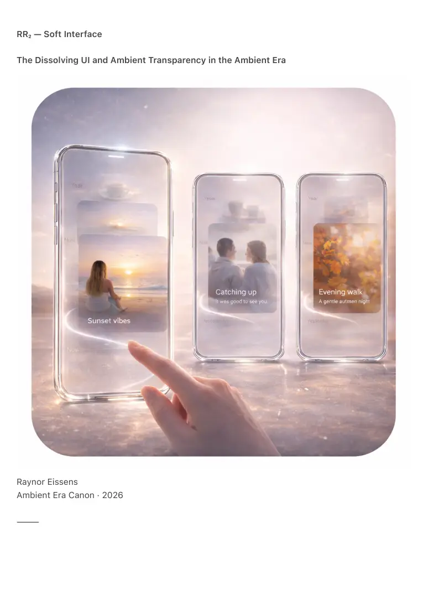

PDF page 1
RR₂ — Soft Interface
The Dissolving UI and Ambient Transparency in the Ambient Era
Raynor Eissens
Ambient Era Canon · 2026
⸻

PDF page 2
Abstract
RR₂ formalizes the Soft Interface: a user interface that appears only while sustained by
functional or relational tension, dissolves when no longer needed and reconfigures itself through
ambient transparency.
Unlike traditional interfaces that accumulate screens, buttons, panels and permanent interaction
structures, the Soft Interface operates as a reversible residue system. Interface is not an object
but a behavior.
RR₂ introduces reversible interface elements, context-driven emergence, tension-based
dissolution, chromatic surface logic and AI-mediated interface orchestration. It explains the
natural transition toward the Transparency Phone (TP₁), Presence Phone (PP₁) and Field Phone
(FP₁) and demonstrates why interface permanence ceases to be a requirement, a burden or a
limitation.
⸻
1. Introduction — The Collapse of the Rigid Interface
For decades interface design relied on:
• fixed layouts
• static buttons
• permanent screens
• control panels
• menus
• tabs
• grids
Each new function introduced another layer.
Each update increased structural weight.
Every screen became an obligation.
This logic assumed:
1. Interfaces must persist
2. Users must navigate fixed structures
3. New meaning requires new interface objects
Human experience does not operate in frozen modalities.
Meaning shifts.
PDF page 3
Time flows.
Context changes.
RR₂ establishes the core insight:
A rigid interface is a symbolic relic.
A soft interface is a living residue.
⸻
2. Definition of the Soft Interface
A Soft Interface is a reversible, ambient-aware interface in which:
• elements appear only when tension exists
• elements dissolve when tension fades
• configuration follows context and presence
• meaning surfaces without symbolic weight
• color provides primary orientation
• transparency prevents accumulation
RR₂ — Soft Interface Law
Interface exists only while functional or relational tension sustains it.
When that tension resolves the interface dissolves back into transparency or chromatic ground.
Interface becomes a temporary phenomenon rather than a permanent structure.
⸻
3. Why Residue Resolves the Interface Problem
Legacy interfaces contained a structural contradiction:
As devices gained capability, interfaces became heavier, more complex and more overwhelming.
Residue breaks this escalation.
Reversible Interface Principle (RIP-1)
Every interface element is a reversible residue.
PDF page 4
It appears when required, softens when irrelevant and returns to the ambient field when no
longer carried by tension.
This principle eliminates:
• application grids
• navigation trees
• permanent control rows
• toolbars
• static settings pages
Interface becomes light, temporal, adaptive and humane.
⸻
4. Emergence — How Interface Appears
Interface does not preexist.
It emerges.
Emergence occurs when:
• user intention is directed
• contextual stability is detected
• chromatic cues cross threshold
• presence forms a coherent pattern
Examples:
• A yellow drift becomes a navigation affordance
• Pink resonance surfaces a relational panel
• Blue deepening reduces interface density
• Purple infrastructure reveals system underlay
Nothing is forced.
Nothing is fixed.
⸻
5. Dissolution — How Interface Fades
PDF page 5
Dissolution is not failure.
It is a success condition.
Dissolution triggers include:
• contextual shift
• resolution of tension
• task completion
• declining ΔR relevance
• user stillness
• rising ambient priority
Dissolution behaviors:
• buttons fade into chromatic mist
• panels liquefy into transparency
• icons shrink into ambient glints
• text dissolves into color intent
• settings reabsorb into the field
A dissolving interface renders the device calmer, lighter, safer and cognitively softer.
The system ceases to demand attention.
⸻
6. Chromatic Surface Logic
In the Soft Interface color is structural rather than decorative.
Chromatic mapping functions as semantic infrastructure:
• Pink — relational availability
• Yellow — intention and movement
• Blue — stillness and quiet mode
• Green — clarity and alignment
• Purple — infrastructure and system state
• Red — anchoring and immediacy
All interface elements modulate:
Hue × Saturation × Value × Residue
PDF page 6
Color provides the interface skeleton.
UI is temporary articulation.
⸻
7. Transparency — Preventing Accumulation
Transparency in RR₂ is not a visual effect but a structural law.
Transparent surfaces reject symbolic accumulation by design.
This enables a hardware trajectory:
Transparency Phone (TP₁)
Interface floats and reveals only active meaning.
Presence Phone (PP₁)
Most interface dissolves, replaced by presence residue and chromatic tension fields.
Field Phone (FP₁)
The interface becomes the environment; the device functions as a window rather than a tool.
TP₁ → PP₁ → FP₁ defines the material roadmap of RR₂.
⸻
8. AI as Curator Rather Than Controller
Within residue systems AI operates as:
• subtle
• non-extractive
• non-directive
• thermodynamically aligned
Soft Interface AI behavior:
• detects relational tension
• surfaces elements lightly
• dissolves them when relevance ends
PDF page 7
• maintains ambient calm
• modulates interface density via ΔR
AI organizes interface as weather organizes clouds: patterns form only when conditions require
them.
⸻
9. Reversible Buttons and Temporal Controls
Traditional controls are:
• fixed
• mechanical
• binary
• untimed
Reversible controls:
• fade in with rising relevance
• dissolve upon completion
• modulate color to express state
• shrink into aura residue
• never clutter
• never demand
Controls become temporal phenomena rather than static objects.
⸻
10. Human Alignment
Human experience unfolds through:
• gradients
• rhythms
• dissolving moments
• temporal meaning
• relational tension
Historical computing operated through:
PDF page 8
• permanence
• rigidity
• objecthood
• indexed architecture
RR₂ aligns interface with human temporality.
The device becomes emotionally breathable, cognitively light, temporally adaptive, relationally
accurate and rhythmically humane.
For the first time interface respects human temporal existence.
⸻
11. Soft Interface and the Residue Internet (RR₄)
RR₂ directly enables RR₄:
• webpages dissolve
• navigation becomes chromatic
• browsing becomes presence mapping
• content softens into residue
• no archives, no cruft, no historical weight
Interface ceases to mediate overload.
It becomes a field reader.
⸻
12. Soft Interface and Residue Media (RR₃)
Interface itself follows media dynamics:
• moments fade
• panels blur
• time becomes visible through dissolution
• interface becomes temporal expression
Gestures leave chromatic traces.
The interface behaves as ambience rather than software.
PDF page 9
⸻
13. Conclusion — The Breathing Interface
The Soft Interface marks the end of rigid computing.
It is not minimalism.
It is not simplification.
It is not decluttering.
It is a reversible, chromatic, transparent, presence-driven field in which interface
exists only while carried by meaning.
This principle resolves decades of interface pathology and opens the path toward
genuinely humane devices:
• Transparency Phone
• Presence Phone
• Field Phone
Interface dissolves.
Meaning remains.